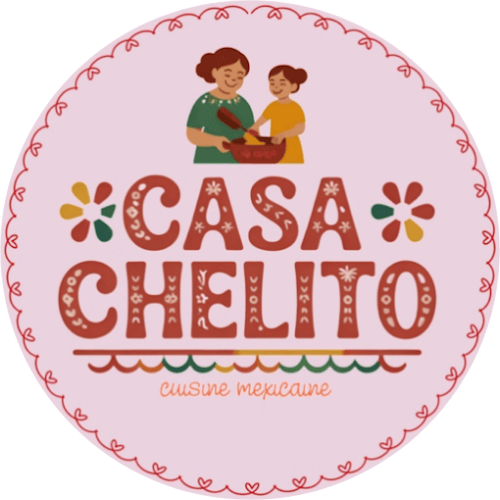
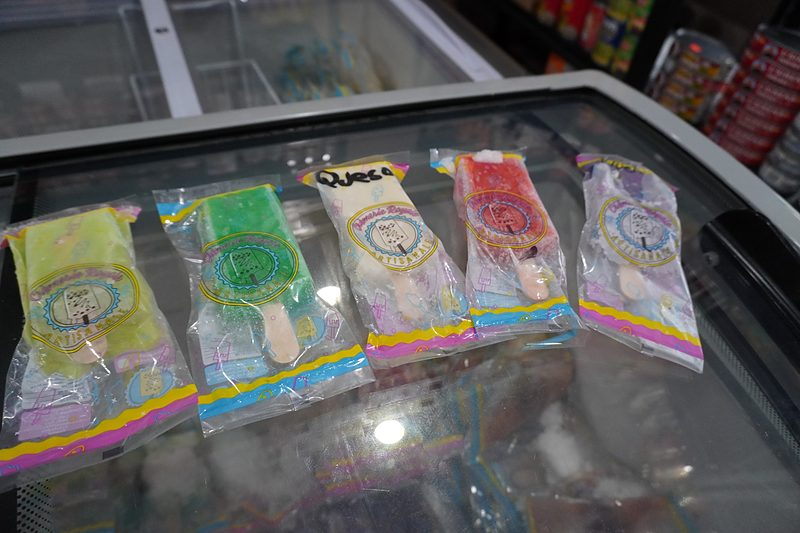
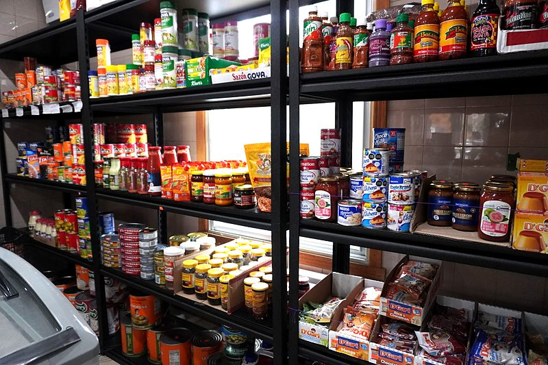
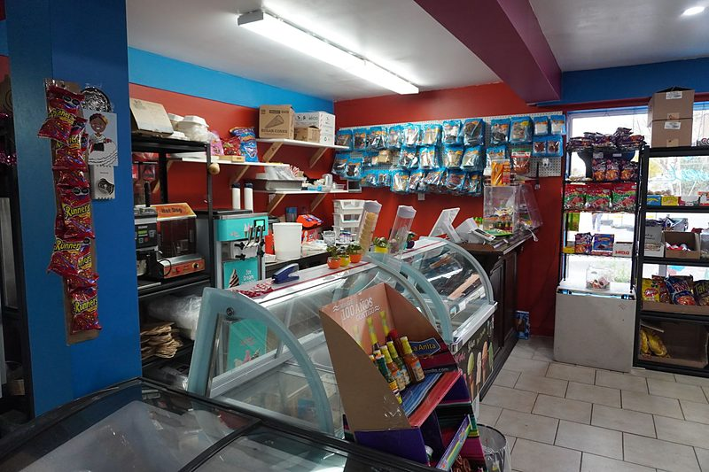

Pain artisanal
Conchas, biscuits, bolillos, pan de muerto et plus de pain sucré mexicain, frais chaque jour.
Voir plus — Pain artisanalÉpicerie mexicaine à Montréal
Pain sucré mexicain tout juste sorti du four, paletas artisanales et tout ce qui vous manque du Mexique : épicerie, boissons et grignotines.

Le meilleur du Mexique, avec la chaleur de la maison.
Conchas, biscuits, bolillos, pan de muerto et plus de pain sucré mexicain, frais chaque jour.
Voir plus — Pain artisanal
Paletas artisanales aux fruits, au chamoy et à la crème, et aussi de la crème glacée.
Voir plus — Paletas artisanales
Piments, salsas, tortillas, bonbons, boissons gazeuses mexicaines et collations pour toutes les envies.
Voir plus — Épicerie et grignotines
Jour des Morts
Moelleux et parfumé, au sésame, glacé ou avec une croûte de concha. Offert seulement en saison : venez chercher le vôtre ou appelez-nous pour le réserver.
Réserver mon pain
Venez nous voir
Pain, paletas, crème glacée, bonbons et épicerie mexicaine, tout au même endroit. Venez faire un tour !
Nous trouverPain et paletas artisanales, comme là-bas.
Les produits et marques du Mexique qui vous manquent.
Un petit coin du Mexique à Montréal où vous êtes toujours les bienvenus.
Commandez par téléphone et on vous livre.
Pour l'instant, les commandes en livraison se font uniquement par téléphone.
(514) 237-0991 Appeler maintenant